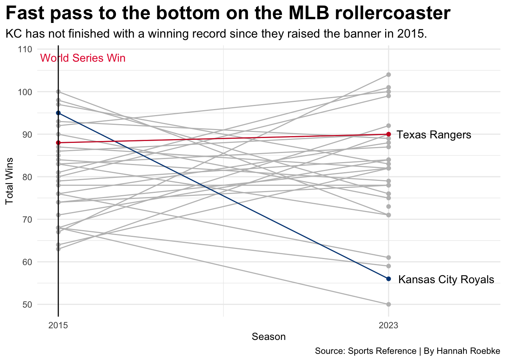
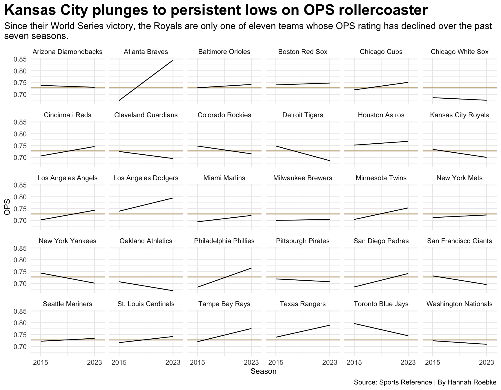

The Royals have been on a rollercoaster since winning the World Series in 2015. What went downhill after they raised the pennant? In 2014 they played for the World Series, but lost. However in 2015 they ran it back and beat the Mets 7-2 in game five. Fast forward to 2023 and they are the basement of the MLB. What happened?
Code
library(tidyverse)library(ggbump)library(ggrepel)library(ggbeeswarm)standings14 <-read_csv("MLBStandings2014.csv")winpct2023 <-read_csv("Ranking2023.csv") |>mutate(Season =2023) winpct2015 <-read_csv("Rankings2015.csv") |>mutate(Season =2015) winpct <-bind_rows(winpct2015, winpct2023)royals <- winpct |>filter(Tm =="Kansas City Royals")rangers <- winpct |>filter(Tm =="Texas Rangers")ggplot() +geom_line(data=winpct, aes(x=Season, y=W, group=Tm), color="grey") +geom_point(data=winpct, aes(x=Season, y=W, group=Tm), color="grey") +geom_line(data=royals, aes(x=Season, y=W, group=Tm), color="#004687") +geom_point(data=royals, aes(x=Season, y=W, group=Tm), color="#004687") +geom_line(data=rangers, aes(x=Season, y=W, group=Tm), color="#CE1126") +geom_point(data=rangers, aes(x=Season, y=W, group=Tm), color="#CE1126") +geom_text(data=royals |>filter(Season ==max(Season)), aes(x=Season +1.4, y=W, group=Tm, label=Tm)) +geom_text(data=rangers |>filter(Season ==max(Season)), aes(x=Season +1.1, y=W, group=Tm, label=Tm)) +scale_x_continuous(breaks=c(2015, 2023), limits=c(2015,2025.2)) +labs(x="Season", y="Total Wins", title="Fast pass to the bottom on the MLB rollercoaster", subtitle="KC has not finished with a winning record since they raised the banner in 2015.", caption="Source: Sports Reference | By Hannah Roebke") +geom_text(aes(x=2015.6, y=108), label="World Series Win", color="#E41C38") +theme_minimal() +theme(plot.title =element_text(size =19, face ="bold"),plot.subtitle =element_text(size=12), axis.title =element_text(size =10),plot.title.position ="plot") +geom_vline(xintercept=2015, color="black")

Despite falling short in 2014 and losing to the Giants in the World Series the Royals still managed to finish with a 89-79 record. In 2015, they not only won the World series, but finished with a 95-67 record. However, ever since the 2015 season, Kansas City has not finished with a winning record. This past season, finishing with their worst record since the 2005 season–only winning 56 games.
Part of the Royals success during their World Series appearance and win was their bullpen. The Royals’ bullpen finished in the bottom in terms of earned run average. Allowing on average only roughly three runs per game. However, after their World Series victory, Kansas City has continued to allow more and more runs per season. There was an exception to the pattern during the 2020 Covid season, however even based on the data from the games that were played the Royals still allowed almost five runs on average. The past few seasons have continued to prove that the Royals need to do some work to improve their bullpen.
ggplot() +geom_hline(yintercept=0.7275469 , color="#BD9B60") +geom_line(data=battingpct, aes(x=Season, y=OPS, group=Tm)) +facet_wrap(~Tm) +labs(x="Season", y="OPS", title="Kansas City plunges to persistent lows on OPS rollercoaster", subtitle="Since their World Series victory, the Royals are only one of eleven teams whose OPS rating has declined over the past seven seasons.", caption="Source: Sports Reference | By Hannah Roebke") +scale_x_continuous(breaks=c(2015, 2023), limits=c(2014,2024)) +theme_minimal() +theme(plot.title =element_text(size =19, face ="bold"),plot.subtitle =element_text(size=12), axis.title =element_text(size =10),plot.title.position ="plot")

Another strength during the 2014 and 2015 seasons was the Royals’ hitting. During those seasons KC hit above the league average. However through player trades and retirements, the bats have turned cold and it has been a free fall to the bottom of the MLB standings in terms of on base percentage.
It is clear that the Royals are nowhere near the top of the season standings. Pitching and hitting are at the source of the problem for the Royals struggles. If they can obtain a better bullpen and start hitting the ball they can perhaps start winning more games and make a run at the World Series once again.